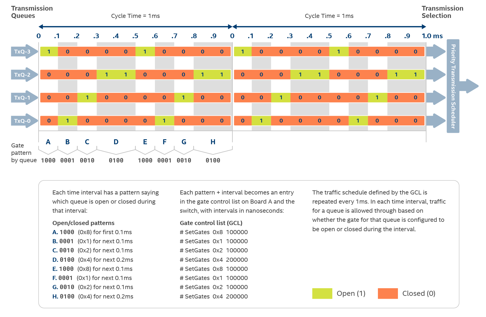
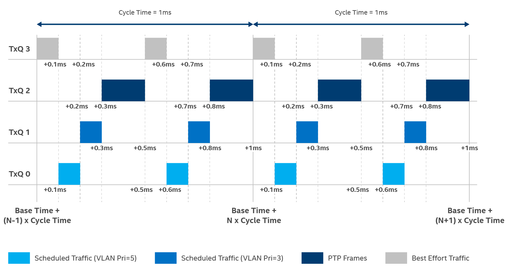

Periodic control applications in automotive and industrial networks require much lower and bounded latencies compared to AV applications. In IEEE 802.1Qbv terminology, this type of traffic pattern is known as scheduled traffic. In contrast, conventional best-effort Ethernet networking does not guarantee low transmission latency and timely delivery. Other interfering traffic can affect critical control data used in industrial automation (TSN traffic). Since control data is usually short in frame length and periodically, the bandwidth used by control data is low. Therefore, it is possible to share the same medium with other traffic in the same network for better bandwidth utilization.
To identify and segregate different types of Ethernet traffic, IEEE 802.1Q introduces VLAN header (contains VLAN ID and VLAN priority) to mark different types of Ethernet frames. By using VLAN priority, Ethernet frames can be queued into different transmit queues, known also traffic class transmit queues. As a technology extension to IEEE 802.1Q, IEEE 802.1Qbv describes Time Aware Shaper (TAS) which has time-controlled transmission gates, which are associated with the above-mentioned traffic class transmit queues. TAS uses time from the PTP clock in Ethernet MAC controller. As a result, we use time synchronization technology (IEEE 1588 or IEEE 802.1AS) to synchronize PTP clocks in all networked appliances across the network. In addition to time synchronization, it is important to make sure all the network appliances have a well-coordinated TAS transmission schedule so that end-to-end scheduled traffic transmission achieves a very small and tightly bounded transmission latency.
The figure below shows the components in IEEE 802.1Qbv TAS (marked in blue).
The transmission schedule (also known as transmission windows) is programmed by using a gate control list (GCL). The GCL is a list of gate control entries (gate command, gate open/close state, interval in nanosecond). The open/close state of the gate is coded in bits: 1 means open and 0 means closed. For example, a value of 0x35 (0011 0101) means TxQ0, TxQ2, TxQ4 & TxQ5 are open. As defined in IEEE 802.1Qbv, there is only one gate command, which is SetGates. The execution of the GCL starts at base time, repeats itself after a duration of cycle time has lapsed. The cycle extension time is useful to ensure a smooth transition from the old GCL to the new GCL.
By programming the TAS GCL and setting its associated time-related parameters, we define transmission windows for various types of Ethernet traffic. Taking scheduled traffic (VLAN priority = 7) as an example, Ethernet frames for scheduled traffic are expected to be transmitted within the two green transmission windows:
- (Base Time + N x Cycle Time +0.1) ms to (Base Time + N x Cycle Time +0.2) ms
- (Base Time + N x Cycle Time +0.6) ms to (Base Time + N x Cycle Time +0.7) ms
Note
The transmission windows for other scheduled traffic (VLAN priority = 5), marked as blue, PTP frames (marked as red) and best effort traffic (marked as gray) are closed when the transmission window of scheduled traffic (VLAN priority = 7) is open. As a result, the transmission window for the scheduled traffic is protected.
One important characteristic of TAS is that a frame is not selected for transmission unless adequate transmission gate open time is available to ensure an entire frame is transmitted. As a result, network administrators do not need to set up guard bands in the transmission schedule to prevent interfering frames from further delaying the transmission of scheduled traffic. Use of guard bands was a common technique before TAS since network transmission is not allowed within the guard band. With TAS, setting up a guard band is no longer needed as there is no unnecessary loss of network bandwidth.

Demo 3: IEEE 802.1Qbv Time Aware Shaper

Board A and Board B run the following common software components:
- ptp4l: A user-space daemon that supports time synchronization based on IEEE 802.1AS Generalized Precision Time Protocol (gPTP).
- In Board A, ptp4l runs in grandmaster clock mode.
- In Board B, ptp4l runs in slave clock mode.
- phc2sys: A user-space program that is used to synchronize system clock (of processor) to PTP clock (of Ethernet controller).
- iperf3: A user-space utility common used for performing network throughput benchmarking. In this demo, we use the utility as best effort traffic generator. The utility always works in pair: client mode in Board A and server mode in Board B.
- igb driver: A Linux kernel Ethernet driver for the Intel Ethernet Controller I210 that supports (1) PTP clock, (2) LaunchTime technology. LaunchTime functionality is related to time deterministic frame transmission and it is driven by taprio qdisc within Linux networking stack.
- sample-app-taprio:
- For Board A, it is a sample application that generates scheduled traffic.
- For Board B, it is a sample application that received scheduled traffic. In addition, the application uses ethtool to set up Rx frame steering by using the Rx filter mechanism in the igb driver.
The software component that runs on Board A only is:
- scheduler.py: The application reads (1) the queue.cfg file for VLAN priority to TxQ mapping and (2) the gates.sched file for the gate control list and uses the tc utility to set up taprio qdisc or mqprio qdisc capabilities in the Linux networking stack. For details about the qdisc, refer to Queue Disciplines.
The software components that run on Board B only are:
- plot.sh: A Bash script that sets up the gnuplot to display the latency of scheduled traffic.
- plot-distribution.sh: A Bash script that sets up the gnuplot to display the inter-packet latency of scheduled traffic.
Transmit Window Configuration for Time-Aware Traffic Scheduling
In Demo 3, Scenario 3, Time-Aware Traffic Scheduling (taprio qdisc) supports multi-process and multi Tx window scheduling. The Tx window provides a protected transmission window for important packets (identified through VLAN priority). With a protected transmission window, the important packets are guaranteed to be transmitted for a specific interval of time, without interruption from other traffic.
Follow these steps to confirm the taprio qdisc configuration set up:
- The mapping of priority to queue is configured in the
queue.cfg file:
--queue.cfg— # PRIORITY QUEUE [ETF] [DELTA] 5 0 etf 200000 3 1 etf 200000 7 2
The format for each line is:
[PRIORITY] [QUEUE] [ETF] [DELTA]
Where
[PRIORITY] VLAN priority of packets [QUEUE] The hardware transmit queue number through which the VLAN priority-tagged will be routed. [ETF] Flag to enable ETF qdisc on a queue. Specify etf for standard ETF qdisc mode or etf_deadline for ETF qdisc in deadline mode. Leave blank if not specifying ETF qdisc. Only applicable for queue 0 and 1. [DELTA] ETF qdisc delta value if ETF is turned on for a queue. Note
The sample application, by default, uses 4 hardware transmit queues, TxQ0 to TxQ3. Other priorities not being configured are mapped to queue 3. - The period of window scheduling is configured in the
gates.sched file. In IEEE 802.1Qbv-2015, this gate operation is also known as the gate control entry.
--gates.sched— S 0x8 100000 S 0x1 100000 S 0x2 100000 S 0x4 200000 S 0x8 100000 S 0x1 100000 S 0x2 100000 S 0x4 200000
The format for each line is:
[CMD] [GATE MASK] [INTERVAL]
Where
[CMD] Gate command. For IEEE 802.1Qbv-2015, there is only one command "SetGateStates" and it is marked as "S". [GATE MASK] Transmission gate states as defined in bitmask manner. 0 means closed and 1 means open. The least significant bit is transmission gate for traffic class 0. For example, a value of 0xC (1100b) means transmission gate for traffic class 2 & 3 are opened and transmission gate for traffic class 0 & 1 are closed. [INTERVAL] Time duration in nanoseconds that a gate operation as defined by <CMD> and <GATE MASK> are executed before the next gate operation. - In demo 3, scheduler.py is provided to automate the programming of
taprio qdisc above-mentioned configuration files (gates.sched and
queue.cfg). To program
taprio qdisc, execute the following command:
$ python scheduler.py [-i ETHDEV] [-q PRIO2Q FILE] [-e TX SCHED START LAPSE] [-g SCHED FILE]
Where
[ETHDEV] Ethernet device name to be used for Demo 3. [SCHED FILE] Transmit schedule config file, for example, gates.sched. [PRIO2Q FILE] Priority to queue mapping config file, for example, queue.cfg file. [TX SCHED START LAPSE] Refers to the time in seconds in the future that should be lapsed before starting to execute the transmit schedule. For example, if the value specified is 60, the cycle will start 60 seconds in the future. Note
scheduler.py generates a file named base_time that contains the base time in nanoseconds (based on the system clock since the Epoch + Tx schedule start lapse value) to be used by sample-app-taprio to synchronize the sending of packets for scheduled traffic. The base time for starting the Tx schedule is also passed into taprio qdisc as [basetime] as shown.$ tc qdisc add dev [ETHDEV] parent root handle 100 taprio num_tc 4 map 3 3 3 1 3 0 3 2 3 3 3 3 3 3 3 3 queues 0 1 2 3 sched-file gates.sched base-time [basetime] clockid CLOCK_TAINote
CLOCK_TAI is the clock ID to identify that the time source is based on system time.If the transmit schedule config file (gates.sched) is not specified, scheduler.py will run mqprio qdisc instead with the following command:
$ tc qdisc add dev [ETHDEV] parent root mqprio num_tc 4 map 3 3 3 1 3 0 3 2 3 3 3 3 3 3 3 3 queues 1@0 1@1 1@2 1@3 hw 0 - Sample-app-taprio takes a config file that specifies the information for all the windows for a packet sent with a specific priority in one TSN cycle.
--tsn_prio5.cfg— cycle_time 1000000 priority 5 number_of_windows 2 window_1_offset 100000 window_1_duration 100000 window_1_packets 1 window_2_offset 600000 window_2_duration 100000 window_2_packets 1
Wherecycle_time To set cycle time of which Tx window repeats itself. priority To set VLAN priority (integer value from 0 to 7) for the transmitted scheduled traffic packets. number_of_windows Total number of Tx windows in one cycle. window_<n>_offset To set time elapsed before the first packet is transmitted for the nth Tx window in nanoseconds. window_<n>_duration To set the duration of the nth Tx window in nanoseconds. window_<n>_packets To set the number of packets to be sent inside the nth Tx window.
sample-app-taprio and plot.sh
The sample-app-taprio application is a reference application to demonstrate IEEE 802.1Qbv. Depending on which scenario the user is running, different options need to be passed. This application is executed on both boards, one for transmitting scheduled traffic, another for receiving scheduled traffic.
For Board A (the purpose of transmitting scheduled traffic):
$ ./sample-app-taprio -i [ETHDEV]
-c [RX-IP-address]
-x [1|2]
-w [TSN-config-file]
[Options]
The options are:
| -A | To set CPU affinity. |
| -b [base_time] | Base time to start the TSN cycle in nanoseconds. |
| -B [file_name] | Typically it is base_time (as generated by scheduler.py) |
| -d [1|2] | Turn Tx print display. On = 1, Off = 0 (Default). |
| -D | Set deadline mode for SO_TXTIME. Must be run with ETF qdisc deadline mode. |
| -E | Enable error reporting on the socket error queue for SO_TXTIME |
| -f [file_name] | Set the name of the output for logging. |
| -h | Show help message. |
| -n [port_number] | UDP destination port. |
| -o [port_number] | UDP source port. |
| -p [TSN_priority] | TSN priority. |
| -P [thread_priority] | To set thread priority. |
| -S | Do not use SO_TXTIME. |
| -t [cycle_time] | TSN cycle time in nanoseconds. |
| -v [VLAN_ID] | VLAN ID for TSN. |
| -x [1|2] | Required To set the application mode. Select 1 for transmit mode - the application will send TSN packets. Select 2 for receiving mode - the application will retrieve packets and display the information. |
| -w [file_name] | Config file, for example, tsn_prio5.cfg that contains all the window information for packets with specific priority in one TSN cycle. |
| -z [time_elapsed] | Delta from wake up to txtime in nanoseconds. |
$ ./sample-app-taprio -i [ETHDEV]
-x [1|2]
-q <priority-to-display>
[Options]
In addition to the arguments above, the option specific for the receiving mode is:
| -y [1|2|3] | To set receive process options where:
|
Note
On Board B, sample-app-taprio will implicitly use ethtool to configure Rx filters to direct incoming packets to specific Rx queues based on VLAN priority. By default, the steering configuration settings are:- Queue 0: Packets with VLAN Priority 6 and 7
- Queue 1: Packets with VLAN Priority 4 and 5
- Queue 2: Packets with VLAN Priority 3 and 2
- Queue 3: Packets with VLAN Priority 6 and 7
Note
- To change the receive filters value, review the create_filter() function in the source code for sample-app-taprio.c.
- To display the runtime latency plot for scheduled traffic, run the
plot.sh script:
$./plot.sh -p [VLAN PRIORITY],[VLAN PRIORITY] [Options]The options are:
-h Show help message.
-m [y-axis_value] Maximum Y-axis value in nanosecond.
-n [y-axis_value] Minimum Y-axis value in nanosecond.
- To display the latency distribution plot for scheduled traffic, run the
plot-distribution.sh script:
$./plot.sh -p [VLAN PRIORITY],[VLAN PRIORITY] [Options]
| -f [file_name] | Source file to get latency data from. |
| -g | Export plot as PNG image. |
| -h | Show help message. |
| -m [x-axis_value] | Maximum X-axis value in nanosecond. |
| -n [x-axis_value] | Minimum X-axis value in nanosecond. |
| -o [png_file_name] | Exported PNG image name if "-g" is specified. |